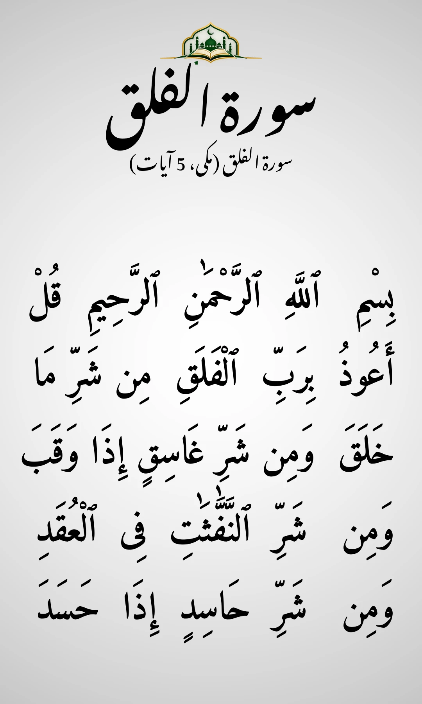

Surah Al-Falaq (113) — Poora Text, Tarjuma aur Fazilat
Surah Al-Falaq (سورۃ الفلق) — mukammal Arabic text, Urdu tarjuma (Kanz-ul-Iman), English translation (Pickthall), fazilat aur kab parhein — sab kuch aik jagah.

Surah Al-Falaq kya hai?
Surah Al-Falaq Quran Pak ki 113th Surah hai — Makki Surah, sirf 5 ayat, Para 30 me hai. "Falaq" ka matlab hai "subah" — jo raat ki tareeki ko phaad kar nikalti hai. Ye Mu'awwidhatayn me se aik hai (doosri Surah An-Naas) — dono Suraton me Allah se har shar se panah mangi gayi hai: makhlooq ke shar se, andheri raat ke shar se, jadu karne waliyon ke shar se aur hasad karne wale ke shar se.
Mukammal Surah Al-Falaq — Arabic, transliteration aur tarjuma
Neeche Surah Al-Falaq ka mukammal Arabic text hai — 5 ayat. Har ayat ke neeche us ki transliteration aur Roman Urdu me matlab diya gaya hai.
1. بِسْمِ ٱللَّهِ ٱلرَّحْمَٰنِ ٱلرَّحِيمِ قُلْ أَعُوذُ بِرَبِّ ٱلْفَلَقِ
Bismillahir Rahmanir Raheem — Qul a'udhu bi Rabbil-Falaq
Allah ke naam se shuru, jo bohat meherban, nihayat rehem wala hai. (Tum) kaho: Main subah ke Rabb ki panah mangta hoon.
2. مِن شَرِّ مَا خَلَقَ
Min sharri ma khalaq
Us ki tamam makhlooq ke shar se.
3. وَمِن شَرِّ غَاسِقٍ إِذَا وَقَبَ
Wa min sharri ghasiqin idha waqab
Aur andheri raat ke shar se jab woh chha jaye.
4. وَمِن شَرِّ ٱلنَّفَّٰثَٰتِ فِى ٱلْعُقَدِ
Wa min sharri-n-naffathati fil-'uqad
Aur un aurton ke shar se jo girahon me phoonkti hain.
5. وَمِن شَرِّ حَاسِدٍ إِذَا حَسَدَ
Wa min sharri hasidin idha hasad
Aur hasad karne wale ke shar se jab woh hasad kare.
Surah Al-Falaq ki fazilat
1. Aisi Suratein jaisi kabhi nazil nahi huin. Hazrat 'Uqbah ibn 'Amir (RA) se riwayat hai ke Nabi ﷺ ne farmaya: "Kya tum ne woh ayat nahi dekhin jo aaj raat nazil huin? Un jaisi kabhi nahi dekhi gayin: Qul a'udhu bi Rabbil-Falaq aur Qul a'udhu bi Rabbin-Nas." (Sahih Muslim 814)
2. Sone se pehle ki hifazat. Hazrat Aisha (RA) se riwayat hai ke Nabi ﷺ jab bistar par jate to Mu'awwidhatayn (Surah Al-Falaq aur Surah An-Naas) parh kar haathon par dam karte aur pure badan par phairte. (Sahih al-Bukhari 5017)
3. Subah-shaam ki hifazat. Nabi ﷺ ne farmaya: Surah Al-Ikhlas aur Mu'awwidhatayn (Surah Al-Falaq, Surah An-Naas) subah aur shaam 3-3 martaba parh lo — ye tumhare liye kaafi hongi. (Jami` at-Tirmidhi 3575; Sunan Abi Dawud 5082)
Kab aur kaise parhein?
Har namaz me — kisi bhi rakat me, kisi bhi Surah ke baad. Subah aur shaam 3 martaba — Surah Al-Ikhlas aur Surah An-Naas ke sath. Sone se pehle — 3 martaba, haathon par dam kar ke pure badan par phair lein. Koi dar ya pareshani ho — jab bhi Allah ki panah chahiye, ye Surah parhein. Chhoti Surah hai, aik minute se bhi kam lagta hai.
Aam sawal (FAQ)
Surah Al-Falaq me kitni ayat hain?
5 ayat — Makki Surah, Para 30.
Mu'awwidhatayn kya hain?
Surah Al-Falaq (113) aur Surah An-Naas (114) — dono me Allah ki panah mangi gayi hai, is liye in ko Mu'awwidhatayn (panah mangne wali do Suratein) kehte hain.
"Falaq" ka matlab kya hai?
Subah, daybreak — jo raat ki tareeki ko phaad kar nikalti hai. Allah ko "Rabbul-Falaq" kaha gaya — subah ka Rabb.
4 Qul kya hain?
Surah Al-Kafirun (109), Surah Al-Ikhlas (112), Surah Al-Falaq (113) aur Surah An-Naas (114).
Sources
Arabic text: Tanzil Uthmani (verified, byte-identical). Urdu tarjuma: Kanz-ul-Iman. English translation: Pickthall. Hadith: Sahih Muslim 814; Sahih al-Bukhari 5017; Jami` at-Tirmidhi 3575; Sunan Abi Dawud 5082.
What is Surah Al-Falaq?
Surah Al-Falaq is the 113th Surah of the Holy Quran — a Makki Surah with only 5 verses, in Para 30. "Falaq" means "daybreak" — the dawn that splits the darkness of the night. It is one of the Mu'awwidhatayn (the other is Surah An-Naas) — in both Surahs we seek Allah's refuge from every evil: the evil of creation, the evil of the dark night, the evil of those who practise witchcraft, and the evil of the envier.
Complete Surah Al-Falaq — Arabic, transliteration and translation
Below is the complete Arabic text of Surah Al-Falaq — 5 verses. Each verse is followed by its transliteration and English translation (Pickthall).
1. بِسْمِ ٱللَّهِ ٱلرَّحْمَٰنِ ٱلرَّحِيمِ قُلْ أَعُوذُ بِرَبِّ ٱلْفَلَقِ
Bismillahir Rahmanir Raheem — Qul a'udhu bi Rabbil-Falaq
Say: I seek refuge in the Lord of the Daybreak
2. مِن شَرِّ مَا خَلَقَ
Min sharri ma khalaq
From the evil of that which He created;
3. وَمِن شَرِّ غَاسِقٍ إِذَا وَقَبَ
Wa min sharri ghasiqin idha waqab
From the evil of the darkness when it is intense,
4. وَمِن شَرِّ ٱلنَّفَّٰثَٰتِ فِى ٱلْعُقَدِ
Wa min sharri-n-naffathati fil-'uqad
And from the evil of malignant witchcraft,
5. وَمِن شَرِّ حَاسِدٍ إِذَا حَسَدَ
Wa min sharri hasidin idha hasad
And from the evil of the envier when he envieth.
Virtues of Surah Al-Falaq
1. Surahs like which were never revealed. 'Uqbah ibn 'Amir (RA) reported that the Prophet ﷺ said: "Have you not seen the verses that were sent down this night, the like of which has never been seen: 'Say: I seek refuge in the Lord of the daybreak' and 'Say: I seek refuge in the Lord of mankind'." (Sahih Muslim 814)
2. Protection before sleep. 'Aisha (RA) reported that whenever the Prophet ﷺ went to bed, he would recite the Mu'awwidhatayn (Surah Al-Falaq and Surah An-Naas), blow on his hands, and pass them over his body. (Sahih al-Bukhari 5017)
3. Morning and evening protection. The Prophet ﷺ said: recite Surah Al-Ikhlas and the Mu'awwidhatayn (Surah Al-Falaq and Surah An-Naas) three times in the morning and evening — they will suffice you. (Jami` at-Tirmidhi 3575; Sunan Abi Dawud 5082)
When and how to recite it?
In every prayer — in any rak'ah, after any Surah. Morning and evening, 3 times — with Surah Al-Ikhlas and Surah An-Naas. Before sleeping — 3 times, blow on your hands and wipe over your body. Whenever you feel fear or worry — recite it whenever you need Allah's refuge. It is a short Surah, it takes less than a minute.
Common questions (FAQ)
How many verses are in Surah Al-Falaq?
5 verses — a Makki Surah, in Para 30.
What are the Mu'awwidhatayn?
Surah Al-Falaq (113) and Surah An-Naas (114) — in both we seek Allah's refuge, so they are called the Mu'awwidhatayn (the two Surahs of refuge).
What does "Falaq" mean?
Daybreak — the dawn that splits the darkness of the night. Allah is called "Rabbul-Falaq" — the Lord of the Daybreak.
What are the 4 Qul?
Surah Al-Kafirun (109), Surah Al-Ikhlas (112), Surah Al-Falaq (113) and Surah An-Naas (114).
Sources
Arabic text: Tanzil Uthmani (verified, byte-identical). Urdu translation: Kanz-ul-Iman. English translation: Pickthall. Hadith: Sahih Muslim 814; Sahih al-Bukhari 5017; Jami` at-Tirmidhi 3575; Sunan Abi Dawud 5082.
سورۃ الفلق کیا ہے؟
سورۃ الفلق قرآن پاک کی ۱۱۳ویں سورت ہے — مکی سورت، صرف ۵ آیات، پارہ ۳۰ میں ہے۔ ”فلق“ کا مطلب ہے ”صبح“ — جو رات کی تاریکی کو پھاڑ کر نکلتی ہے۔ یہ معوذتین میں سے ایک ہے (دوسری سورۃ الناس) — دونوں سورتوں میں اللہ سے ہر شر سے پناہ مانگی گئی ہے: مخلوق کے شر سے، اندھیری رات کے شر سے، جادو کرنے والیوں کے شر سے اور حسد کرنے والے کے شر سے۔
مکمل سورۃ الفلق — عربی اور ترجمہ
نیچے سورۃ الفلق کا مکمل عربی متن ہے — ۵ آیات۔ ہر آیت کے نیچے کنزالایمان ترجمہ دیا گیا ہے۔
1. بِسْمِ ٱللَّهِ ٱلرَّحْمَٰنِ ٱلرَّحِيمِ قُلْ أَعُوذُ بِرَبِّ ٱلْفَلَقِ
تم فرماؤ میں اس کی پناہ لیتا ہوں جو صبح کا پیدا کرنے والا ہے
2. مِن شَرِّ مَا خَلَقَ
اس کی سب مخلوق کی شر سے
3. وَمِن شَرِّ غَاسِقٍ إِذَا وَقَبَ
اور اندھیری ڈالنے والے کے شر سے جب وہ ڈوبے
4. وَمِن شَرِّ ٱلنَّفَّٰثَٰتِ فِى ٱلْعُقَدِ
اور ان عورتوں کے شر سے جو گرہوں میں پھونکتی ہیں
5. وَمِن شَرِّ حَاسِدٍ إِذَا حَسَدَ
اور حسد والے کے شر سے جب وہ مجھ سے جلے
سورۃ الفلق کی فضیلت
۱۔ ایسی سورتیں جیسی کبھی نازل نہیں ہوئیں۔ حضرت عقبہ بن عامرؓ سے روایت ہے کہ نبی ﷺ نے فرمایا: ”کیا تم نے وہ آیات نہیں دیکھیں جو آج رات نازل ہوئیں؟ ان جیسی کبھی نہیں دیکھی گئیں: قل اعوذ برب الفلق اور قل اعوذ برب الناس۔“ (صحیح مسلم ۸۱۴)
۲۔ سونے سے پہلے کی حفاظت۔ حضرت عائشہؓ سے روایت ہے کہ نبی ﷺ جب بستر پر جاتے تو معوذتین (سورۃ الفلق اور سورۃ الناس) پڑھ کر ہاتھوں پر دم کرتے اور پورے بدن پر پھیرتے۔ (صحیح البخاری ۵۰۱۷)
۳۔ صبح و شام کی حفاظت۔ نبی ﷺ نے فرمایا: سورۃ الاخلاص اور معوذتین (سورۃ الفلق، سورۃ الناس) صبح اور شام ۳-۳ مرتبہ پڑھ لو — یہ تمہارے لیے کافی ہوں گی۔ (جامع الترمذی ۳۵۷۵؛ سنن ابی داؤد ۵۰۸۲)
کب اور کیسے پڑھیں؟
ہر نماز میں — کسی بھی رکعت میں، کسی بھی سورت کے بعد۔ صبح اور شام ۳ مرتبہ — سورۃ الاخلاص اور سورۃ الناس کے ساتھ۔ سونے سے پہلے — ۳ مرتبہ، ہاتھوں پر دم کر کے پورے بدن پر پھیر لیں۔ کوئی ڈر یا پریشانی ہو — جب بھی اللہ کی پناہ چاہیے، یہ سورت پڑھیں۔ چھوٹی سورت ہے، ایک منٹ سے بھی کم لگتا ہے۔
عام سوالات
سورۃ الفلق میں کتنی آیات ہیں؟
۵ آیات — مکی سورت، پارہ ۳۰۔
معوذتین کیا ہیں؟
سورۃ الفلق (۱۱۳) اور سورۃ الناس (۱۱۴) — دونوں میں اللہ کی پناہ مانگی گئی ہے، اس لیے ان کو معوذتین (پناہ مانگنے والی دو سورتیں) کہتے ہیں۔
”فلق“ کا مطلب کیا ہے؟
صبح، دن کا نکلنا — جو رات کی تاریکی کو پھاڑ کر نکلتی ہے۔ اللہ کو ”رب الفلق“ کہا گیا — صبح کا رب۔
۴ قل کیا ہیں؟
سورۃ الکافرون (۱۰۹)، سورۃ الاخلاص (۱۱۲)، سورۃ الفلق (۱۱۳) اور سورۃ الناس (۱۱۴)۔
مصادر
عربی متن: تنزیل عثمانی (تصدیق شدہ، لفظ بہ لفظ)۔ اردو ترجمہ: کنزالایمان۔ انگریزی ترجمہ: پکتھال۔ حدیث: صحیح مسلم ۸۱۴؛ صحیح البخاری ۵۰۱۷؛ جامع الترمذی ۳۵۷۵؛ سنن ابی داؤد ۵۰۸۲۔